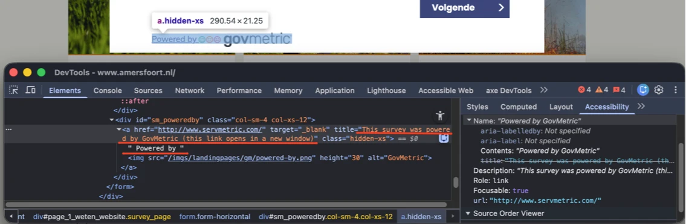
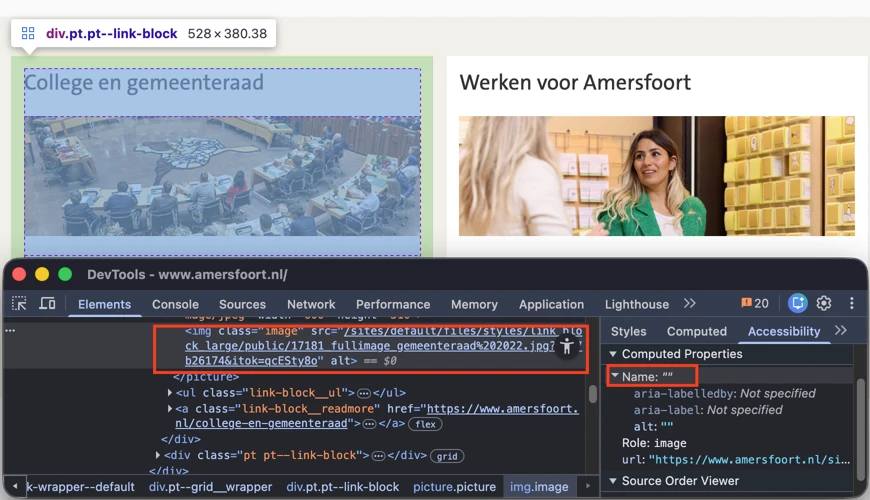
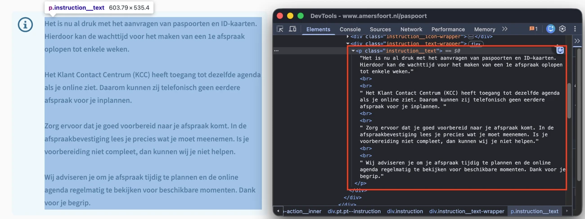
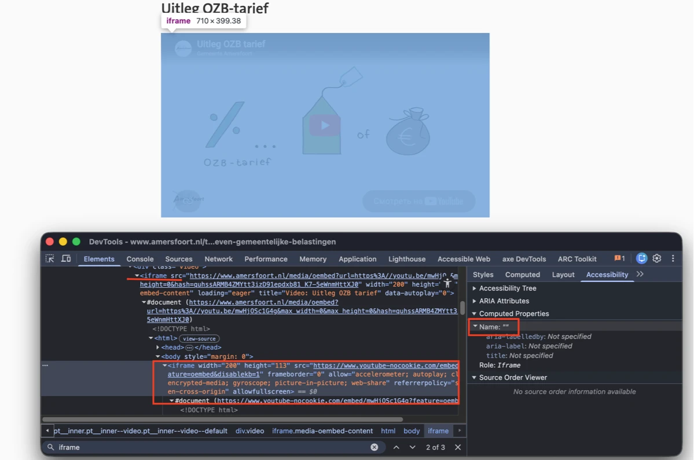

Audit digitale toegankelijkheid van website www.amersfoort.nl
Samenvatting
Wij hebben de website www.amersfoort.nl onderzocht tussen 7 en 16 juni 2026. Op dit moment is een deel van de succescriteria als voldoende beoordeeld. In dit rapport lees je welke punten nog verbetering behoeven en hoe deze kunnen worden aangepakt.
In de header van de website opent de zoekknop een paneel met een zoekveld. Tijdens het typen toont dit zoekveld suggesties in een uitklaplijst en gedraagt het zich dus als een combobox. In de code mist op het invoerveld echter de bijbehorende rol en de overige attributen die het combobox-patroon vereist.
Als bezoeker die een zoekveld met autocomplete gebruikt met een schermlezer, heb ik nodig dat het invoerveld role="combobox" heeft, samen met aria-expanded en de overige attributen die het combobox-patroon voorschrijft — want op dit moment verschijnt de suggestielijst wel visueel, maar mijn schermlezer kan niet aankondigen dat het veld een combobox is, dat er suggesties open staan of hoeveel het er zijn; de autocomplete werkt alleen voor ziende bezoekers.
Oplossing:
Maak het zoekveld toegankelijk als combobox: leg in de code de relatie met de suggestielijst vast en geef aan of de lijst open of dicht is, zodat hulpsoftware dat kan doorgeven. Zorg dat het zoekveld correct wordt aangekondigd en dat bezoekers de suggesties met een schermlezer kunnen doorlopen en selecteren.
Op de pagina staat onderaan een knop die het chatvenster opent. Visueel staat daarnaast een tooltip met de tekst "Kan de chatbot je verder helpen?" en een sluit-knop ("x"). In de code zijn de tooltip en de sluit-knop echter genest binnen het knop-element van de chat.
Interactieve elementen mogen geen andere interactieve of focusbare elementen bevatten. Door deze nesting ontstaat een ongeldige structuur waarin meerdere interactieve elementen tot één element zijn samengevoegd. Hulpsoftware kan deze elementen daardoor onjuist interpreteren, met onvoorspelbare aankondigingen en toetsenbordnavigatie als gevolg.
User story
Als bezoeker die een schermlezer gebruikt, vertrouw ik erop dat elk interactief element apart te herkennen en te bedienen is. Wanneer interactieve elementen in elkaar zijn genest, kan hulpsoftware ze verkeerd interpreteren en wordt navigatie verwarrend of onvoorspelbaar.
Oplossing:
Zorg dat interactieve elementen niet in elkaar genest staan. Plaats de chat-knop, de tooltip en de sluit-knop als afzonderlijke elementen in de DOM, zodat elk element apart focus kan krijgen en apart wordt aangekondigd.
#3 - Knop heeft geen code waaruit blijkt dat er een dialoogvenster opent
Impact: GrootType: TechniekWCAG: 4.1.2EN: 9.4.1.2
Op de pagina staat onderaan een knop die het chatvenster opent, maar in de code is niet vastgelegd dat de knop een dialoogvenster opent.
Hetzelfde probleem komt voor bij de knop die het feedback-dialoogvenster opent.
User story
Als bezoeker die een schermlezer gebruikt, moet ik weten wanneer een knop een dialoogvenster opent. Elke knop die een dialoogvenster opent, moet daarom aria-haspopup="dialog" en aria-expanded hebben. Zonder die attributen kan ik niet vooraf horen welke overlay verschijnt.
Oplossing:
Geef in de code aan dat de knop een dialoogvenster opent. Dit kan door:
aria-haspopup="dialog" toe te voegen aan de knop, zodat hulpsoftware weet dat er een dialoogvenster wordt geopend.
aria-expanded te gebruiken om de toestand van het dialoogvenster aan te geven (true of false).
Let op: gebruik aria-expanded alleen als dezelfde knop het dialoogvenster opent én sluit.
Op de pagina staat onderaan een knop die het chatvenster opent. Naast deze knop staat een tooltip met de tekst "Kan de chatbot je verder helpen?" en een sluit-knop ("x"). Het "x"-icoon op de sluit-knop heeft een te laag contrast: het grijze icoon (#AAAAAA) op de witte achtergrond heeft een contrastverhouding van 2,3:1. Daardoor is het icoon voor sommige bezoekers, met name bezoekers met een visuele beperking of kleurenblindheid, moeilijk of helemaal niet te zien.
User story
Als bezoeker met een visuele beperking herken ik icoonknoppen aan hun contrast. Het icoon op elke icoonknop moet minimaal 3,0:1 contrast hebben met de achtergrond. Onder die drempel verdwijnt de knop voor mij uit beeld.
Oplossing:
Verhoog het contrast van het icoon ten opzichte van de achtergrond naar minimaal 3,0:1. Dit kan door het icoon donkerder te maken of de achtergrond aan te passen. Controleer het resultaat met een contrast checker.
Op de pagina staat onderaan een knop die het chatvenster opent. In het chatvenster staat een invoerveld met grijze placeholder-tekst (#757575) op een lichtgrijze achtergrond (#F5F7F9). De contrastverhouding is 4,3:1 en daarmee te laag. Hierdoor kunnen bezoekers de placeholder-tekst moeilijk lezen.
User story
Als bezoeker met een visuele beperking lees ik placeholders om het verwachte format te zien. Elke placeholder moet minimaal 4,5:1 contrast houden met het invoerveld. Anders is het voorbeeld onleesbaar en moet ik gokken naar het format.
Oplossing:
Zorg dat de contrastverhouding minimaal 4,5:1 is. Dit kun je in CSS oplossen met bijvoorbeeld:
Op de pagina staat onderaan een knop die het chatvenster opent. In het chatvenster staat een invoerveld met de placeholder-tekst "Typ hier je vraag …". Er is geen permanent zichtbaar label aanwezig; de placeholder fungeert als label.
Invoervelden moeten een label hebben dat altijd zichtbaar is. Een placeholder kan deze rol niet vervullen, omdat hij verdwijnt zodra de bezoeker begint te typen.
User story
Als bezoeker die een schermlezer gebruikt of een cognitieve beperking heeft, controleer ik mijn invoer. Elk invoerveld moet daarom een permanent zichtbaar label hebben. Placeholders verdwijnen zodra ik typ en dan weet ik niet meer waar het veld voor was.
Oplossing:
Voeg een permanent zichtbaar label toe bij het invoerveld.
#7 - Dialoogvenster heeft geen rol "dialog"
Impact: GrootType: TechniekWCAG: 4.1.2EN: 9.4.1.2
Op de pagina opent een knop onderaan een chatvenster. In de code is dit chatvenster niet als dialoogvenster vastgelegd: het mist role="dialog". Daardoor herkent hulpsoftware het venster niet als een aparte interactieve context.
In plaats daarvan is role="dialog" toegepast op de afzonderlijke chatberichten. Dit gebruik is onjuist: schermlezers kondigen daardoor elk bericht aan als een afzonderlijk dialoogvenster, wat niet overeenkomt met de werkelijke structuur en verwarring veroorzaakt voor bezoekers met een schermlezer.
User story
Als bezoeker die een schermlezer gebruikt, vertrouw ik erop dat dialoogvensters correct worden vastgelegd, zodat ik weet wanneer er een nieuwe interactieve context verschijnt. Als dialoogvensters niet goed zijn vastgelegd of als de rol op de verkeerde elementen staat, raak ik het overzicht kwijt en krijg ik misleidende aankondigingen.
Oplossing:
Pas role="dialog" toe op het chatvenster zelf en zorg dat het venster één samenhangend dialoogvenster vormt. Verwijder role="dialog" van de afzonderlijke berichten. Zorg dat het dialoogvenster als één geheel aan hulpsoftware wordt doorgegeven.
#8 - Contrastverhouding van tekst en achtergrond is minder dan 4,5:1
Op de pagina staat onderaan een knop die het chatvenster opent. In dit chatvenster staat de witte tekst "We helpen je graag" op een oranje achtergrond (#E67302). De contrastverhouding is 3,1:1 en daarmee te laag.
User story
Als bezoeker met een visuele beperking, of in fel zonlicht, kan ik lichte tekst niet lezen. Kleine, niet-vetgedrukte tekst moet daarom minimaal 4,5:1 contrast houden. Anders moet ik turen of sla ik de tekst over.
Oplossing:
Omdat deze tekst kleiner is dan 24px en niet vetgedrukt, moet het contrast minimaal 4,5:1 zijn.
#9 - Bij 400% zoomen verdwijnt een deel van de inhoud
Wanneer deze pagina wordt bekeken op een schermresolutie van 1280 bij 1024 pixels en wordt ingezoomd tot 400% (320px breed), valt de tekst "Kan de chatbot je verder helpen?" gedeeltelijk weg. Deze tekst staat in de tooltip naast de knop die het chatvenster opent.
Bij 400% inzoomen mag de leesbaarheid van informatieve elementen niet verloren gaan.
User story
Als bezoeker met een visuele beperking zoom ik in tot 400% op een scherm van 1280 bij 1024 pixels. Alle tekst moet zichtbaar blijven en niet worden afgekapt. Anders verbergt het inzoomen juist de tekst die ik wilde lezen.
Oplossing:
Zorg dat alle inhoud zichtbaar en bruikbaar blijft wanneer bezoekers inzoomen tot 400% op een scherm van 1280 bij 1024 pixels.
#10 - Taalaanduiding ontbreekt bij anderstalige tekst
Impact: MediumType: ContentWCAG: 3.1.2EN: 9.3.1.2

Op de website opent de knop "uw reactie" een dialoogvenster. In dit dialoogvenster staat een link met Engelstalige tekst zonder taalaanduiding: "Powered by GovMetric. This survey was powered by GovMetric (this link opens in a new window)".
De primaire taal van de pagina is Nederlands en is vastgelegd in het lang-attribuut van het html-element. Daardoor leest een schermlezer de Engelstalige tekst voor met Nederlandse uitspraakregels, wat tot een onverstaanbare aankondiging leidt.
User story
Als bezoeker die een schermlezer gebruikt, heb ik bij anderstalige zinnen een eigen taalaanduiding nodig. Zonder die aanduiding klinkt de uitspraak verkeerd.
Oplossing:
Zorg dat tekst in een andere taal een eigen taalcode krijgt. Voor Engelse tekst voeg je bijvoorbeeld lang="en" toe aan het element dat de tekst bevat, zodat hulpsoftware de tekst met de juiste uitspraak voorleest.
#11 - Statusmelding in formulier wordt niet aangekondigd
Impact: GrootType: TechniekWCAG: 4.1.3EN: 9.4.1.3
Op de website opent de knop "uw reactie" een dialoogvenster. In dit dialoogvenster staat een formulier dat statusmeldingen toont, zoals foutmeldingen. Een voorbeeld is de melding "Je hebt geen keuze gemaakt" die verschijnt wanneer het formulier wordt verzonden zonder dat onder "Maak een keuze" een optie is gekozen. Deze melding wordt niet automatisch aangekondigd door schermlezers. Bezoekers die hulpsoftware gebruiken, weten daardoor niet dat er een fout is opgetreden of dat hun actie niet is gelukt.
De melding wordt niet aangekondigd omdat zij tegelijk met het omhulsel-element in de DOM verschijnt. Schermlezers kondigen wijzigingen alleen aan wanneer de inhoud verandert binnen een bestaande live-region. Omdat er geen bestaande live-region is die de schermlezer kan volgen, blijft de update onzichtbaar.
User story
Als bezoeker die een schermlezer gebruikt, vertrouw ik erop dat statusmeldingen na het verzenden van een formulier automatisch worden aangekondigd, zodat ik weet of de actie is gelukt of dat ik een fout moet herstellen. Als die meldingen niet worden aangekondigd, weet ik niet dat er iets is gebeurd.
Oplossing:
Zorg dat statusmeldingen via de code aan hulpsoftware worden doorgegeven, zodat ze automatisch worden aangekondigd wanneer ze verschijnen. Plaats de live-region (role="alert" of aria-live) op een element dat al in de DOM aanwezig is voordat de melding wordt ingevoegd.
Deze pagina bevat één of meer aria-label-attributen met Engelstalige tekst. Schermlezers lezen deze labels voor volgens de uitspraakregels van de primaire taal van de pagina, in dit geval Nederlands. Dat leidt tot een onjuiste uitspraak en moeilijk verstaanbare aankondigingen.
Zie bijvoorbeeld de toegankelijke naam "Highlighted Subjects" bij de navigatielijst met links als "Paspoort en ID-kaart", "Verhuizen" en andere.
User story
Als bezoeker die de pagina met een schermlezer leest, heb ik nodig dat elke aria-label op de pagina in dezelfde taal staat als de pagina zelf — of dat de taal is aangegeven via een omhullend lang-attribuut — want op dit moment staat er een Engelstalige aria-label op een Nederlandstalige pagina, leest mijn schermlezer de Engelse woorden voor met Nederlandse uitspraakregels en wordt de aankondiging onverstaanbaar.
Oplossing:
Vertaal de teksten van de aria-label-attributen naar het Nederlands, zodat schermlezers ze correct voorlezen.
#13 - Decoratieve afbeeldingen zijn niet verborgen voor schermlezers
Impact: MediumType: ContentWCAG: 1.1.1EN: 9.1.1.1

Op deze pagina staan onder de kop "College en gemeenteraad" decoratieve afbeeldingen met een leeg tekstalternatief (alt=""). Een leeg alt-attribuut geeft aan dat een afbeelding decoratief is, maar deze afbeeldingen zijn nog steeds bereikbaar voor hulpsoftware. Een bezoeker die met een schermlezer afbeelding voor afbeelding doorloopt, krijgt ze daardoor als naamloze afbeeldingen aangekondigd. Decoratieve afbeeldingen hebben geen informatieve waarde en moeten volledig verborgen worden voor schermlezers.
User story
Als bezoeker die de pagina via een schermlezer hoort, of die afhankelijk is van een schone en voorspelbare leesvolgorde, heb ik nodig dat elke puur decoratieve afbeelding volledig verborgen is voor hulpsoftware — want zolang een decoratieve afbeelding bereikbaar blijft, wordt hij aangekondigd als een naamloze afbeelding, wordt mijn leesstroom onderbroken door inhoud die ik niet nodig heb, en kan ik niet meer in één oogopslag bepalen welke aankondigingen informatie bevatten en welke niet.
Oplossing:
Dit kan op verschillende manieren:
Voeg bij <img>-elementen naast een leeg alt-attribuut (alt="") ook aria-hidden="true" toe, of gebruik role="presentation" (of role="none"). Zorg dat er geen title-attribuut aanwezig is, omdat dat alsnog een naam aan de afbeelding geeft.
Implementeer de decoratie als CSS-achtergrondafbeelding in plaats van als <img>-element, zodat deze geen onderdeel meer is van de documentinhoud.
Op deze pagina beschrijft de kop "Zie ook" de inhoud die volgt onvoldoende. Koppen als "Snel naar", "Direct naar" en "Ga naar" zijn te algemeen en geven geen betekenisvolle informatie over het onderwerp van de inhoud. Bezoekers met een schermlezer gebruiken koppen om de structuur van de pagina te begrijpen en snel relevante inhoud te vinden. Koppen moeten daarom duidelijk en concreet zijn en het onderwerp van de volgende inhoud goed weergeven.
Als bezoeker die de pagina scant door met een schermlezer van kop naar kop te springen, heb ik nodig dat elke kop echt iets zegt over de sectie eronder — niet algemene aanwijzingen als "Ga naar", "Direct naar" of "Snel naar" die alleen aangeven dat er links volgen — want álle koppen in een lijst met links zijn al "links naar andere pagina's", en een kop die dat als enige zegt, geeft mij geen idee over welke groep links ik nu kijk.
Oplossing:
Vervang de vage koppen door beschrijvende koppen die duidelijk het onderwerp van de bijbehorende sectie weergeven.
Disclaimer:
Op deze pagina komen toegankelijkheidsproblemen voor die hierboven al zijn beschreven.
#15 - Visueel meerdere alinea's, in de HTML slechts één
Impact: MediumType: ContentWCAG: 1.3.1EN: 9.1.3.1

Op deze pagina is een tekstblok met meerdere alinea's onjuist opgemaakt als één <p>-element. De visuele structuur moet ook in de code worden weergegeven.
User story
Als bezoeker die de pagina met een schermlezer leest, heb ik nodig dat elke visuele alinea-break in de HTML een echt <p>-element is — niet witruimte binnen één <p> — want mijn schermlezer gebruikt alinea-grenzen om te pauzeren, om mij alinea voor alinea te laten springen en om aan te geven waar de ene gedachte stopt en de andere begint. Wanneer zes zichtbare alinea's in één <p> zijn verpakt, verlies ik die structuur en leest de tekst als één lange, ademloze zin.
Oplossing:
Plaats elke alinea in een eigen <p>-element. Het aantal zichtbare alinea's moet overeenkomen met het aantal <p>-elementen in de code.
Disclaimer:
Op deze pagina komen toegankelijkheidsproblemen voor die hierboven al zijn beschreven.
#16 - Iframe heeft geen title-attribuut
Impact: GrootType: TechniekWCAG: 4.1.2EN: 9.4.1.2

Op deze pagina staat in de sectie "Uitleg OZB-tarief" een <iframe>-element dat een tweede <iframe>-element bevat. Het binnenste iframe mist een title-attribuut. Schermlezers kunnen daardoor het doel van het iframe niet aankondigen en bezoekers kunnen niet bepalen welke inhoud erin staat zonder het te betreden. Dit bemoeilijkt navigatie voor bezoekers die hulpsoftware gebruiken aanzienlijk.
User story
Als bezoeker die met een schermlezer door iframes navigeert, heb ik nodig dat elk iframe op de pagina een title-attribuut heeft — want mijn schermlezer leest die title voor zodat ik weet wat erin is opgenomen (een video, een kaart, een formulier), en een iframe zonder title is een zwarte doos waarvan ik niet kan beslissen of ik hem moet betreden.
Oplossing:
Voeg een beschrijvend title-attribuut toe aan het <iframe>-element dat duidelijk maakt welke inhoud is opgenomen.
#17 - Automatisch gegenereerde ondertiteling
Impact: MediumType: ContentWCAG: 1.2.2EN: 9.1.2.2
Deze pagina bevat in de sectie "Uitleg OZB-tarief" een video met gesproken tekst. Er is wel ondertiteling, maar deze is automatisch gegenereerd en daardoor onnauwkeurig. Video's met gesproken inhoud moeten voor bezoekers met een auditieve beperking nauwkeurige ondertiteling hebben die exact overeenkomt met wat er wordt gezegd. Omdat de automatisch gegenereerde ondertiteling fouten en verkeerde interpretaties bevat, voldoet zij niet aan deze eis.
User story
Als dove of slechthorende bezoeker volg ik video's via de ondertiteling. Elke video moet daarom ondertiteling van menselijke kwaliteit hebben die woord voor woord overeenkomt met de audio. Automatisch gegenereerde ondertiteling mist interpunctie en namen, dus kan ik die niet vertrouwen.
Oplossing:
Zorg dat de ondertiteling van hoge kwaliteit is en exact weergeeft wat er in de video wordt gezegd.
#18 - Visuele informatie in de video is niet toegankelijk
Op deze pagina staat in de sectie "Uitleg OZB-tarief" een video. De video bevat op verschillende momenten tekst en logo's (bijvoorbeeld rond 0:04). Er is geen media-alternatief en geen audiobeschrijving beschikbaar. Hierdoor is deze visuele informatie niet toegankelijk voor blinde bezoekers.
User story
Als blinde of slechtziende bezoeker mis ik alles wat alleen op het beeld staat. Elke video met tekst, namen of logo's moet daarom een media-alternatief op de pagina hebben. Anders bereikt de informatie wel ziende bezoekers, maar mij niet.
Oplossing:
Voor succescriterium 1.2.3 kan dit worden opgelost met een geschreven tekst (media-alternatief). Voor succescriterium 1.2.5 is dat echter niet genoeg. Hiervoor moet een audiobeschrijving worden toegevoegd waarin de visuele elementen in de video worden beschreven, zoals tekst, namen en logo's. Audiobeschrijving wordt alleen toegevoegd op plekken waar daar ruimte voor is — meestal aan het begin en het einde van de video.
Op deze pagina staat in de sectie "Uitleg OZB-tarief" een videospeler. Bij het tabben door deze speler komt de toetsenbordfocus op meerdere onzichtbare interactieve elementen terecht. Onzichtbare interactieve elementen mogen geen onderdeel zijn van de focusvolgorde. Bezoekers die met het toetsenbord navigeren raken daardoor het overzicht kwijt en kunnen per ongeluk elementen activeren.
User story
Als bezoeker die het toetsenbord of een schermlezer gebruikt, vertrouw ik erop dat ik de focus zie. De focus mag alleen op zichtbare interactieve elementen staan, nooit op verborgen of buiten beeld geplaatste elementen. Nu verdwijnt de focus onverwacht.
Oplossing:
Zorg dat onzichtbare elementen geen toetsenbordfocus kunnen ontvangen. Gebruik display: none of visibility: hidden om elementen volledig (visueel én voor de focusvolgorde) te verbergen. Voor elementen die verborgen zijn maar later zichtbaar kunnen worden (zoals submenu's), gebruik je tabindex="-1" om ze uit de tabvolgorde te halen zolang ze verborgen zijn. Wanneer het element weer zichtbaar wordt, verwijder je het tabindex-attribuut of zet je het op 0.
Op deze pagina staat een kop van niveau 3 direct gevolgd door een andere kop van hetzelfde niveau. Zie bijvoorbeeld "Handige links" (visueel verborgen) gevolgd door "Meer over de woningbouwplannen", en "Lopende projecten" (visueel verborgen) gevolgd door "Ontwikkelingen".
Dit wijst op een onjuiste kopstructuur. Koppen moeten een logische hiërarchie volgen. Een kop mag niet direct gevolgd worden door een andere kop van hetzelfde of een hoger niveau zonder tussenliggende inhoud.
User story
Als bezoeker die met een schermlezer door koppen springt, heb ik nodig dat elke kop een eigen sectie introduceert. Twee koppen van hetzelfde niveau mogen niet direct onder elkaar staan.
Oplossing:
Zorg dat koppen een logische hiërarchie volgen en de structuur van de inhoud weergeven. Een h3 hoort bijvoorbeeld gevolgd te worden door een h4 of door inhoud, niet door een andere h3 of een h2.
Dit PDF-document mist tags, waardoor de inhoud niet toegankelijk is voor schermlezers. Daarnaast kunnen we de PDF hierdoor niet volledig onderzoeken. Het gaat om alle succescriteria die met de PDF-codelaag te maken hebben, zoals semantische koppen en alternatieve teksten bij afbeeldingen. Wanneer dit wordt opgelost, kunnen er nieuwe toegankelijkheidsproblemen aan het licht komen die nu nog verborgen blijven.
User story
Als bezoeker die een schermlezer gebruikt, heb ik tags nodig om de inhoud te begrijpen. Elke PDF moet daarom een volledige tag-structuur hebben met koppen, lijsten en tabellen. Zonder tags is een PDF voor mij een platte afbeelding.
Oplossing:
Voeg tags toe aan het document die de structuur weergeven.
Opslaan als getagde PDF in Word (Windows): ga naar Bestand. Kies "Opslaan als Adobe PDF" (als Acrobat is geïnstalleerd) of ga naar Meer → Exporteren → PDF/XPS-document maken. In het venster dat opent, klik op Opties. Zet een vinkje bij "Documentstructuurtags voor toegankelijkheid" en bij "Bladwijzers maken met koppen". Zo kunnen gebruikers met het toetsenbord snel van sectie naar sectie springen. Dit werkt alleen wanneer echte kopstijlen zijn gebruikt.
Opslaan als getagde PDF in Word (Mac): ga naar Bestand → Opslaan als, kies PDF in het keuzemenu en selecteer "Best voor elektronische distributie en toegankelijkheid". Op Mac worden bladwijzers automatisch op basis van de koppen gegenereerd, zonder dat hiervoor instellingen hoeven te worden aangepast.
#22 - PDF-document heeft geen titel
Impact: MediumType: ContentWCAG: 2.4.2EN: 9.2.4.2
Dit PDF-document heeft geen titel die is ingesteld in de bestandseigenschappen. Een PDF-document hoort een titel te hebben die kort weergeeft waar het document over gaat. Deze titel hoort in plaats van de bestandsnaam te verschijnen in de titelbalk van een PDF-lezer.
Wanneer in de PDF-metadata een documenttitel is ingesteld, wordt deze titel in plaats van de bestandsnaam getoond. Dit maakt het document toegankelijker voor bezoekers met verschillende beperkingen, omdat zij dan snel kunnen bepalen of het document relevant is.
User story
Als bezoeker die een schermlezer gebruikt, heb ik vaak meerdere PDF's tegelijk open. Elke PDF moet daarom een echte documenttitel in de bestandseigenschappen hebben. Zonder die titel hoor ik alleen een betekenisloze bestandsnaam.
Oplossing:
Voeg een beschrijvende titel toe aan de bestandseigenschappen van de PDF. In Adobe Acrobat:
Open het PDF-document in Adobe Acrobat.
Ga naar Bestand → Eigenschappen.
Ga naar het tabblad Beschrijving.
Vul in het veld Titel een beschrijvende titel in, bijvoorbeeld "Gemeentelijke Belastingen 2026".
Klik op OK en sla het bestand op.
#23 - Kleurcontrast van kleine tekst is te laag
Impact: MediumType: ContentWCAG: 1.4.3EN: 9.1.4.3
In dit PDF-document staat onderaan de pagina's de oranje tekst "1 | Stadsberichten" en "2 | Stadsberichten" (#F26E5B) op een witte achtergrond. De contrastverhouding is 2,9:1 en daarmee te laag. Voor normale tekst geldt een minimale contrastverhouding van 4,5:1.
User story
Als bezoeker met een visuele beperking lees ik PDF's soms in fel zonlicht. Normale tekst moet daarom minimaal 4,5:1 contrast houden met de achtergrond. Anders kan ik niet lezen zonder turen.
In dit PDF-document is de kop "Reglement van orde rekenkamer Amersfoort" onjuist opgemaakt met twee kop-tags. Hierdoor verschilt de visuele weergave van de onderliggende structuur die door de tags wordt vastgelegd. Hulpsoftware interpreteert deze tags als twee aparte koppen, wat niet overeenkomt met de werkelijke structuur van de inhoud.
User story
Als bezoeker die een schermlezer gebruikt, vertrouw ik op koppen om de structuur van het document te begrijpen en efficiënt te navigeren. Elke logische kop moet daarom met één kop-element worden opgemaakt. Als één kop in meerdere koppen is opgesplitst, raakt het document-overzicht verstoord en wordt navigatie verwarrend.
Oplossing:
Zorg dat elke visuele kop met één kop-tag (H1–H6) wordt opgemaakt. Voeg de gesplitste delen samen tot één kop-element, zodat de structuur in de tags overeenkomt met de visuele structuur.
#25 - Koppen zijn niet als kop gemarkeerd
Impact: MediumType: ContentWCAG: 1.3.1EN: 9.1.3.1
In dit PDF-document zijn de volgende koppen niet als kop opgemaakt: "Artikel 9 klankbordgroep" en "Artikel 10 auditcommissie". Hierdoor verschilt de visuele informatiestructuur van de structuur die in de tags is vastgelegd.
User story
Als bezoeker die een schermlezer gebruikt, navigeer ik door PDF's door van kop naar kop te springen. Elke visuele kop moet daarom als H1–H6 zijn opgemaakt en niet als gestileerde alinea. Zonder de juiste tag is een kop voor mij onzichtbaar.
Oplossing:
Vervang de P-tag door een H1–H6-tag, zodat de structuur in de tags overeenkomt met de visuele structuur.
#26 - Informatieve afbeelding via figure-tag mist tekstalternatief
Impact: MediumType: ContentWCAG: 1.1.1EN: 9.1.1.1
Dit PDF-document bevat een logo zonder tekstalternatief (alt-tekst). Zie pagina 1.
Afbeeldingen die als "figure" zijn getagd, horen altijd een tekstalternatief te krijgen, omdat de figure-tag is bedoeld voor informatieve afbeeldingen. Zonder alt-tekst kunnen schermlezers de inhoud van de afbeelding niet doorgeven en horen blinde en slechtziende bezoekers alleen "afbeelding", wat misleidend kan zijn.
User story
Als bezoeker die een schermlezer gebruikt, heb ik beschrijvingen bij afbeeldingen nodig. Elke informatieve figure moet daarom een tekstbeschrijving hebben. Zonder die beschrijving hoor ik alleen "afbeelding" en mis ik de inhoud.
Oplossing:
Voeg een tekstalternatief toe aan deze informatieve afbeelding.
Over dit onderzoek
Leeswijzer
Onze rapporten zijn anders. Bij het bespreken van de gevonden problemen volgen wij niet de structuur van de norm, maar die van jouw website of app. Hierdoor kun je gewoon per pagina of scherm aan de slag gaan. Wel zo makkelijk! Je vindt verderop een overzicht van alle pagina’s met problemen.
We geven je bij elk gevonden issue een paar voorbeelden, maar niet een complete lijst. Controleer zelf of het probleem ook nog op andere plekken voorkomt. Zie het rapport als een leidraad.
Gebruikte norm
Dit onderzoek laat zien in hoeverre de website op dit moment voldoet aan WCAG 2.2, niveau A en AA. WCAG staat voor Web Content Accessibility Guidelines. Dit is de internationale norm voor digitale toegankelijkheid. De Europese norm EN 301 549 bevat alle eisen van WCAG op niveau A en AA.
In dit rapport hebben we korte beschrijvingen van de succescriteria uit de norm opgenomen, met een algemene uitleg erbij. Wil je ze helemaal lezen? Bekijk dan de documentatie van WCAG.
Gebruikte onderzoeksmethode
We gebruiken de onderzoeksmethode WCAG-EM van het W3C. Het proces ziet er als volgt uit:
vaststellen wat binnen en buiten scope valt
vaststellen welke technologieën zijn gebruikt
steekproef (sample) samenstellen
steekproef onderzoeken
gevonden issues beschrijven
Het grootste deel van het onderzoek doen we met de hand. Voor een deel van de toegankelijkheidseisen gebruiken we automatische tools als ondersteuning, zoals axe-core en Chrome Developer Tools.
Belangrijk om te weten
Dit rapport helpt je om de toegankelijkheid van je website te verbeteren. Maar let op: het is geen definitieve, volledige lijst van alle aanwezige toegankelijkheidsproblemen. Dat zit zo:
Het is een steekproef
Ten eerste is het onderzoek gebaseerd op een steekproef. Die is op een betrouwbare manier genomen, en de meeste problemen zullen daardoor zeker aan het licht komen. Toch kan een probleem net buiten de steekproef vallen. Bij een volgend onderzoek kan het wel ontdekt worden.
Op basis van falsificatie
We beoordelen vanuit het principe van falsificatie. Dat houdt in dat we proberen te bewijzen dat iets niet waar is, in plaats van te bevestigen dat het klopt. ‘Voldoet’ betekent daarom dat we geen reden hebben gevonden om een punt af te keuren. Maar als we later wél een reden vinden, kan het alsnog worden afgekeurd.
Voortschrijdend inzicht
Het komt voor dat de beoordeling van een succescriterium op detailniveau verandert. De norm beschrijft namelijk niet élk mogelijk scenario. Samen met andere onderzoeksbureaus overleggen we hoe we met bepaalde situaties omgaan. Zo kan iets dat nu wordt afgekeurd, soms bij een volgend onderzoek worden goedgekeurd en andersom.
Oplossen leidt tot nieuw probleem
Ten slotte kan het gebeuren dat bij het oplossen van een probleem onbedoeld een nieuw toegankelijkheidsprobleem ontstaat. Dat komt dan bij een volgend onderzoek pas naar voren.
Hoe werkt dit rapport?
Bevindingen bekijken en filteren
Alle gevonden toegankelijkheidsproblemen staan onder Gevonden problemen. Je kunt de bevindingen filteren op:
Impact (Groot, Medium, Klein, Advies) — hoe ernstig is het probleem voor de gebruiker?
Type (Content, Techniek) — moet de inhoud of de techniek worden aangepast?
Status (Open, Opgelost) — welke problemen zijn al verholpen?
Voortgang bijhouden
Je kunt je voortgang op twee manieren bijhouden:
CSV-export — exporteer alle bevindingen als CSV-bestand en laad het in een (online) spreadsheet om met je team samen te werken.
Jira-export — exporteer alle bevindingen als Jira-compatibel CSV-bestand. Importeer het via Jira > Issues > Import issues from CSV. Bevindingen worden aangemaakt als bugs met prioriteit op basis van impact.
Registreer in de browser — activeer deze optie om per bevinding bij te houden of het is opgelost. Je voortgang wordt opgeslagen in je browser. Niemand anders kan je resultaat zien. Let op: de voortgang is gekoppeld aan je browser. Als je een andere browser of een ander apparaat gebruikt, begint de telling opnieuw.
Plan van aanpak — download een geprioriteerd plan van aanpak om de gevonden problemen stap voor stap op te lossen. Dit is beschikbaar bij audits vanaf maart 2026.
Link naar een specifieke bevinding delen
Bij elke bevinding verschijnt een link-icoon wanneer je er met de muis overheen gaat. Klik op dit icoon om de directe link naar die bevinding te kopiëren. Je kunt deze link plakken in een e-mail of chatbericht, bijvoorbeeld om een vraag te stellen aan Proper Access over een specifiek punt.